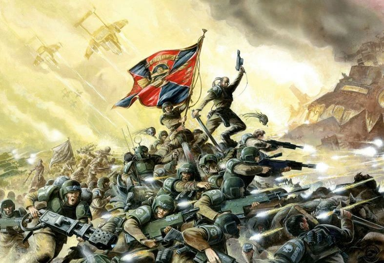

41st millennium
| 41st millennium M41 | |
|---|---|
 The Imperial Guard in battle, the defining image of the age Artwork © Games Workshop | |
| Span | 001.M41–999.M41[a] |
| Preceded by | 40th millennium (M40) |
| Followed by | 42nd millennium (M42) |
| Eras | The Waning (to c. 744.M41) Time of Ending (744–999.M41) |
| Ruler | Emperor of Mankind, on the Golden Throne governed by the High Lords of Terra |
| New threats | Tyranids (from 745.M41); T'au Empire (from 742.M41); awakening Necrons |
| Ended by | Thirteenth Black Crusade, Fall of Cadia, opening of the Great Rift (999.M41) |
The 41st millennium, abbreviated M41, is the thousand-year period of the Imperial Dating System running from 001.M41 to 999.M41. For most of the Imperium of Mankind's history it was the "present age", and many Imperial records written before the opening of the Great Rift describe the whole Imperium simply as it stood in the 41st millennium.[1]
The millennium opened in the long decline that Imperial historians call The Waning and closed in the Time of Ending, a name taken from the prophecy of Taggarath, the Seer of Corrinto, in 744.M41. Its first centuries saw the Gothic War (139–160.M41) and the conquests of Lord Solar Macharius (392–399.M41). Its last three centuries brought the first contact with the T'au Empire, the arrival of the Tyranids in 745.M41, the reawakening of the Necrons, the Badab War and the Ork wars for Armageddon.[1][2]
It ended in catastrophe. The Thirteenth Black Crusade of Abaddon the Despoiler destroyed Cadia in 999.M41, and the Great Rift tore the galaxy in two. In the same year the primarch Roboute Guilliman was restored to life, returned to Terra and began the Indomitus Crusade, events that Imperial records treat as the threshold of the Era Indomitus and the 42nd millennium.[3]

Overview
[edit]The Imperium at the start of the millennium
[edit]By 001.M41 the Imperium had stood for some ten thousand years since the Horus Heresy (005–014.M31). It had survived the Nova Terra Interregnum (early M35 to 975.M35) and the Age of Apostasy (early M36 to c. 310.M36), and its institutions had hardened into the forms recorded in the Codex Imperialis: a bureaucracy of the Adeptus Terra governed by the High Lords of Terra, the state religion of the Imperial Cult, about a thousand Space Marine Chapters and the vast Astra Militarum. Warp storms and losses during The Waning (M38–M41) had left many regions isolated and much of the Segmentum Pacificus and the Ultima Segmentum thinly held.[1][4]
The early and middle centuries
[edit]The first great conflict of the millennium was the Gothic War (139–160.M41), Abaddon's Twelfth Black Crusade, fought for the Gothic Sector of the Segmentum Obscurus around the ancient Blackstone Fortresses. In 392.M41 Lord Solar Macharius began the Macharian Crusade, which conquered about a thousand worlds in seven years; after his death in 400.M41 his generals fought each other in the Macharian Heresy until c. 470.M41. In 444.M41 the daemon primarch Angron invaded Armageddon in the First War for Armageddon.[2]
The Time of Ending
[edit]Imperial chronology marks a turn in 744.M41, when the seer Taggarath of Corrinto prophesied the Time of Ending. Over the next two and a half centuries the Imperium met three new kinds of enemy. The Damocles Gulf Crusade (742–745.M41) made first open contact with the T'au Empire on the Eastern Fringe. In 745.M41 Hive Fleet Behemoth reached Ultramar and was destroyed at the Battle of Macragge, beginning the Tyrannic Wars. Necron tomb worlds began to wake across the galaxy.[2][1]
The same centuries saw the Sabbat Worlds Crusade (from 755.M41), the Siege of Vraks (813–830.M41), the Badab War (901–913.M41), the Second War for Armageddon (941–943.M41) and the Third (from 998.M41), and the arrival of Hive Fleet Kraken and Hive Fleet Leviathan in the 990s.[2]
The end of the millennium
[edit]The last years of the millennium were marked by spreading warp storms, rising numbers of psychic births and a series of disasters that later historians grouped together as the Gathering Storm. In 999.M41 Abaddon launched the Thirteenth Black Crusade, broke the Cadian Gate and brought about the Fall of Cadia. The Craftworld Aeldari and the Ynnari engineered the return of Roboute Guilliman, who crossed to Terra in the Terran Crusade and resumed the office of Lord Commander of the Imperium. The Great Rift opened across the galaxy and the Noctis Aeterna cut most of the Imperium off from the Astronomican.[3][4]
Timeline
[edit]| Date | Event | Region |
|---|---|---|
| 139–160.M41 | Gothic War; the Twelfth Black Crusade | Gothic Sector, Segmentum Obscurus |
| 356.M41 | Birth of Macharius | Donia, Segmentum Pacificus |
| 392–399.M41 | Macharian Crusade | Segmentum Pacificus |
| 400–c. 470.M41 | Macharian Heresy after the death of Macharius | Segmentum Pacificus |
| 444.M41 | First War for Armageddon; Angron defeated | Armageddon, Segmentum Solar |
| 500.M41 | The Tears of the Emperor | Unrecorded |
| 742–745.M41 | Damocles Gulf Crusade against the T'au | Eastern Fringe |
| 744.M41 | Prophecy of Taggarath; the Time of Ending begins | Corrinto |
| 745.M41 | Hive Fleet Behemoth; Battle of Macragge | Ultramar |
| 755.M41–after 791.M41 | Sabbat Worlds Crusade | Sabbat Worlds, Segmentum Pacificus |
| 813–830.M41 | Siege of Vraks | Scarus Sector, Segmentum Obscurus |
| 901–913.M41 | Badab War | Maelstrom Zone, Ultima Segmentum |
| 941–943.M41 | Second War for Armageddon | Armageddon |
| 993–997.M41 | Second and Third Tyrannic Wars (Kraken, Leviathan) | Eastern Fringe; galactic south |
| 998.M41 | Third War for Armageddon begins | Armageddon |
| 999.M41 | Thirteenth Black Crusade; Fall of Cadia | Cadian Gate |
| 999.M41 | Great Rift opens; Noctis Aeterna | Whole galaxy |
| 999.M41 | Return of Roboute Guilliman; Terran Crusade; Indomitus Crusade proclaimed | Macragge; Terra |
Historiography
[edit]The 41st millennium is the best-documented period of Imperial history after the Great Crusade, because so many of the archives that survive were written in it. It is also one of the most disputed. Many of its dates are check 7 or 8 records, compiled long after the events, and the Chronostrife has shown that different Imperial calendars do not agree on when the millennium ended. The Logos Historica Verita has noted that the final decades of M41 and the first years of M42 overlap in the records of different regions, because time passed at different rates across the galaxy after the Great Rift opened.[4][b]
See also
[edit]Notes
[edit]- ^ By the Terran reckoning of the Imperial Dating System. Rival calendars identified during the Chronostrife place the end of the millennium at different points.
- ^ For this reason some events dated "999.M41" in Terran records are dated to the first years of M42 elsewhere, and vice versa.
References
[edit]- ^ a b c d Haley, Guy. Dark Imperium (novel). Black Library, Ch. 9 "Imperator Gloriana," pp. 96-97.
- ^ a b c d Imperium Nihilus - Vigilus Defiant (8th Edition), pp. 10, 20. Games Workshop.
- ^ a b Warhammer 40,000: Rulebook (5th Edition), pg. 127. Games Workshop.
- ^ a b c Haley, Guy. Dark Imperium (novel). Black Library, Ch. 9 "Imperator Gloriana," pp. 96-97.